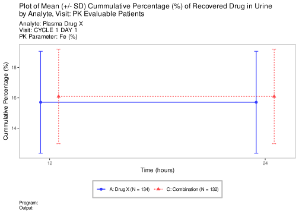
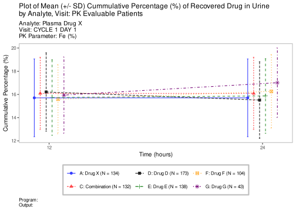

use_title <-"Plot of Mean (+/- SD) Cummulative Percentage (%) of Recovered Drug in Urine \nby Analyte, Visit: PK Evaluable Patients"use_subtitle <-"Analyte: Plasma Drug X \nVisit: CYCLE 1 DAY 1 \nPK Parameter:"use_footnote <-"Program: \nOutput:"separation_between_barplots <-1.5result <-g_lineplot(df = adpp,variables =control_lineplot_vars(x ="Time",y ="AVAL",group_var ="ARM",paramcd ="PARAM1",y_unit ="AVALU" ),alt_counts_df = adpp,y_lab ="Cummulative Percentage",x_lab ="Time (hours)",y_lab_add_paramcd =FALSE,y_lab_add_unit =TRUE,interval ="mean_sdi",whiskers =c("mean_sdi_lwr", "mean_sdi_upr"),title = use_title,subtitle = use_subtitle,caption = use_footnote,ggtheme =theme_nest(),position = ggplot2::position_dodge(width =2))plot <- result +theme(plot.caption =element_text(hjust =0)) +scale_x_continuous(breaks =c(12, 24))
Scale for x is already present.
Adding another scale for x, which will replace the existing scale.
Code
plot

Experimental use!
WebR is a tool allowing you to run R code in the web browser. Modify the code below and click run to see the results. Alternatively, copy the code and click here to open WebR in a new tab.
In this case we need to process the data further by artificially adding more random rows. Of course this step is not necessary in the case that data already has more cohorts.
Code
adpp_hck <- adpp %>%mutate(AVAL +1*rnorm(nrow(adpp), mean =1, sd =1)) %>%mutate(ARM =as.factor(sample(c("D: Drug D","E: Drug E","F: Drug F","G: Drug G" ),nrow(adpp),replace =TRUE,prob =c(0.4, 0.3, 0.2, 0.1) )))adpp <-bind_rows(adpp, adpp_hck)use_title <-"Plot of Mean (+/- SD) Cummulative Percentage (%) of Recovered Drug in Urine \nby Analyte, Visit: PK Evaluable Patients"use_subtitle <-"Analyte: Plasma Drug X \nVisit: CYCLE 1 DAY 1 \nPK Parameter:"use_footnote <-"Program: \nOutput:"separation_between_barplots <-1.5result <-g_lineplot(df = adpp,variables =control_lineplot_vars(x ="Time",y ="AVAL",group_var ="ARM",paramcd ="PARAM1",y_unit ="AVALU" ),alt_counts_df = adpp,y_lab ="Cummulative Percentage",x_lab ="Time (hours)",y_lab_add_paramcd =FALSE,y_lab_add_unit =TRUE,interval ="mean_sdi",whiskers =c("mean_sdi_lwr", "mean_sdi_upr"),title = use_title,subtitle = use_subtitle,caption = use_footnote,ggtheme =theme_nest(),position = ggplot2::position_dodge(width =2))plot <- result +theme(plot.caption =element_text(hjust =0)) +scale_x_continuous(breaks =c(12, 24))
Scale for x is already present.
Adding another scale for x, which will replace the existing scale.
Code
plot

Experimental use!
WebR is a tool allowing you to run R code in the web browser. Modify the code below and click run to see the results. Alternatively, copy the code and click here to open WebR in a new tab.
Code
library(tern)library(dplyr)library(ggplot2)library(nestcolor)set.seed(123)# loading in the dataadpp <- random.cdisc.data::cadpp# filtering the rows for specific data entriesadpp <- adpp %>%filter(PARAMCD =="RCPCINT", AVISIT =="CYCLE 1 DAY 1", PPCAT =="Plasma Drug X")# adding or modifying specific columnsadpp <- adpp %>%mutate(ARM =as.factor(TRT01A)) %>%mutate(PARAM1 ="Fe") %>%# re-format PK parameter namemutate(Time =as.numeric(gsub("PT*|\\.|H$", "", PPENINT))) %>%droplevels() %>%df_explicit_na()# in cases where the cohorts are numeric it is possible to rename themlevels(adpp$ARM) <-c("A: Drug X","C: Combination")